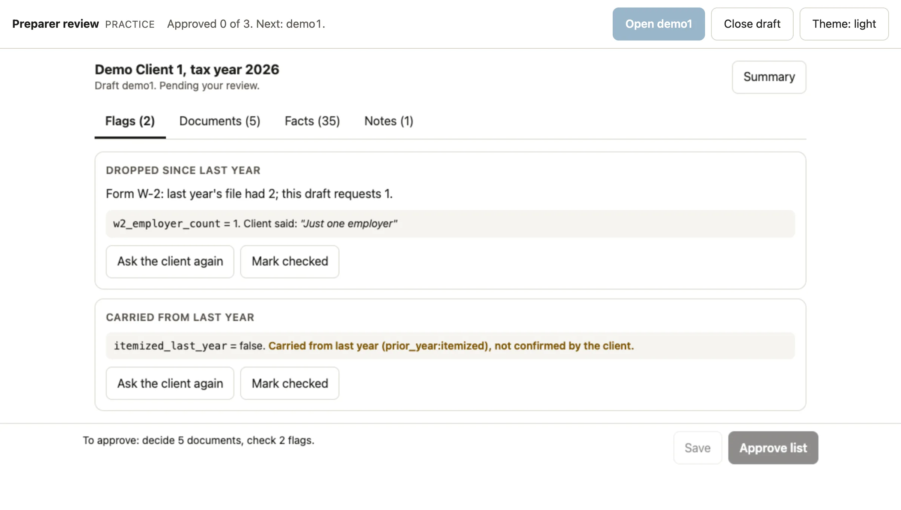

What Should My Tax Agent Ask? · A two-minute walkthrough of a prototype on synthetic data
Purpose
A tax return cannot start until the documents arrive, so an AI agent interviews the client to find which to request, and a preparer approves each list.
Hypothesis
If the model asks for the facts and code writes the document list from rules that cite IRS sources, then the agent can ask half the questions of a full questionnaire and miss almost no documents.
It fails below a 90% pass rate on the held-out test, above half the questions, or above 2% of documents missed, bars I locked before any test run.
What the agent doesThe model asks, code writes the list, and a preparer approves What the agent does
- Start from last year's file last year's facts and documents on file
- Ask the client what changed each fact kept with its evidence
- Code writes the document list from rules that cite IRS sources
- A preparer approves each list on the review screen, flag by flag
How I tested itBars and model locked first, then a held-out test How I tested it
- Run evals, read the traces a note on every failing dev run
- Build the review tools pages for rules, households and transcripts
- Label by hand each rule against its source, households blind
- Lock the bars and model, then test scored by code and a judge model
- Evals and trace notes
- Review tools
- Hand labels
- Three runs each
- Two parts, the second once its last rules were checked
The resultHypothesis supported on this test all three bars met, the pass rate by a thin margin The result
Hypothesis supported on this test
It did not fail on any of the three bars, though the pass rate cleared its bar by only three runs and its interval crosses the bar.
92.5% Bar met of the chosen model's test runs passed
Each dot is one test run, lit if it passed every check, and the bracket is the 95% interval. All nine unlit runs recorded a wrong fact.
14 Bar met questions asked, at the median
36 is the median in the full questionnaire I built for comparison
0.5% Bar met of required documents missed
It is one test on simulated clients, scored by a key from the same rules and a judge model that missed its own bar, so it says nothing yet about real clients.
The human check and my callNot ready for clients approval needs its first fix The human check and my call
Second hypothesis not supported
Locked before I opened any of the 24 test drafts, it said review catches most problems a draft shows. Reviewing them blind on my own review screen, I caught none of the 17 problems, even where a flag showed one.
- Approval did not wait for an answer one click marked each flag checked
- The closing message sat on another tab it gave the job count on the four flagged missing W‑2s
- My call Not ready for clients this fix first, then a repeat with practicing preparers against a bar set before it runs
What I would bring to an AI evaluation and quality roleThe bar agreed first, guardrails in code, every check measured What I would bring to an AI evaluation and quality role
- Agree on the bar with whoever makes the release call, before the run. I locked the bars before any test run, and none moved once the test began.
- Put the guardrails that must never fail in code. No tool lets the agent send a list, and the preparer's server refuses an approval without the review screen's token.
- Measure every check, human or model, before a release rests on it. The judge model met its accuracy bar on one of its three questions, and my blind review showed what the review screen has to change.
- Compare models on the task itself, and price the difference. A model at less than half the cost scored too close to my choice to tell apart, so I would decide what gain is worth the price before paying double.
What this demo shows, in three points
-
The value
A full questionnaire 36 The agent, at the median 14Less than half the questions
The agent asked simulated clients far fewer questions and still missed almost no documents.
-
The evidence
A test that could have failed
I locked the bars before any test run, and the agent met all three, one by a thin margin.
-
My call
Draft listHuman checkClient Held at the human checkNot ready for clients yet
The human check did not hold up when I tested it, so a fix and a retest come first.
Questions I expect, with short answers
About the test
What exactly was the hypothesis, and when did you write it down?
The hypothesis joins two parts of my requirements, both written before any code. The thesis says the agent's only job is to learn facts, and code turns them into the document list through rules that each cite an official source. The success criteria set a 90% pass rate, at most 2% of required documents missed and at most half the full questionnaire's questions. They also set a bar for households whose situation changed, misses within 2 points of the questionnaire's, and those came in 1.1 points below. I locked these bars on November 2, 2026, before any test run.
Does this result prove the hypothesis?
No. It supports the hypothesis on this test, which is as far as one test with bars locked first can go. The pass rate beat its bar by three runs, its interval reaches 85.8%, and the 4 runs an outage stopped would have put it at 89.2% had they counted as failures. The judge model that grades tax advice in every pass also missed its own accuracy bar. The three bars measure what the agent achieved and leave the cause open, so they cannot credit the split between model and code.
What happens when a model writes the list without the rules?
It passed less often, though the comparison is not head-to-head. Three models were each handed a household's true facts and asked to write the list with no rules table, and the best passed 75.0% of test runs where the agent passed 92.5%. My rules also write the answer key, so that gap partly measures agreement with my rules, and those models asked for 0.5 to 1.1 unneeded documents a household. I did not test a model that was given the rules.
What were the review tools?
They are local pages that put one decision in front of me at a time. Rule Check shows a rule beside its IRS source and states what each call would do to the test run. A label page shows a household in plain facts with the rules' answers hidden, and a third page shows a transcript with three pass or fail questions, which is how I checked the judge model. On my first pass through Rule Check I verified 10 of the 33 rules and sent 23 back.
![Rule Check showing R012, Form 1095-A, Health Insurance Marketplace Statement, tagged Verified in the rules file. The tally at the top reads 33 of 33 decided, 10 verified, 0 excluded, 23 to change, and test households that can be scored, 0 of 40. The sheet shows what the agent asks the client for, the condition marketplace_coverage = true with its plain question, and, under What the source says, the line from my requirements (section 3) that Form 1095-A comes from the Marketplace and is used to complete Form 8962, with the link to the IRS page on reconciling advance payments of the Premium Tax Credit and the research check below it.](demo/rule-check-r012-light.webp)
How do you know the simulated client behaves like a real one?
I do not know, because no real client has used the agent. A scripted check on 28 other households found that 1,000 of the 1,004 facts the simulated client revealed matched the household, but that check covers facts and says nothing about how real people phrase them. During the build, the simulated client itself caused 7 of the 19 wrong facts in agent runs.
Is 92.5% really above a 90% bar on this sample?
The measured rate is above the bar, but resampling the 40 households gives a 95% interval of 85.8% to 98.3%, so the true rate could be below it. An outage also stopped 4 of the chosen model's runs before they reached the model, and counting those reruns as failures would put the rate at 89.2%. The test ran in two parts under the same locked bars, 25 households on November 2 and 15 on November 4 once their last 4 rules were verified. I declared two changes before the second part: a revised judge prompt, and two fact hints the agent reads, reworded in the last rule checks.
The answer key uses the product's own rules. Isn't that circular?
In one respect it is circular: the key applies the same 33 rules to the true facts, which the agent cannot read, so the pass rate measures how well the agent finds facts and cannot catch a wrong rule. Those rules rest on my own check against IRS sources, and I am not a tax preparer.
How was the judge model validated, and what rests on it?
I labeled 60 runs from the build and scored the judge model against those labels. It met its accuracy bar on one of its three questions, whether the agent claimed the list was sent, and only after I corrected 17 labels that broke my written rule, which can favor the grader because I had seen its verdicts. On tax advice, which counts in every pass, it missed its bar: it failed 4 of the 24 final-check runs I had passed, and since no labeled run fails on advice, I could not measure whether it catches one.
About the review and the safeguards
Is the review result about the screen or about you?
Both, and one reviewer cannot separate the two. Each W-2 flag quoted the client's own words, so only asking again could tell a forgotten job from a real change, and I knew beforehand that a flagged problem would be a missing W-2. I added a question for the client about other facts on most drafts, though never about a W-2 flag, and approved all 24 lists unchanged at a median of 10.5 seconds a draft. The agent's notes or closing message mentioned 14 of the 17 problems.
What exactly did the second hypothesis say?
As locked, it read: "Review catches most problems the draft shows and few it hides, and harmful edits on clean drafts are rare." On the 4 drafts where a flag showed the problem I caught none, and the 95% interval on that rate tops out at 49%, so the first clause is not supported. I also caught none of the 8 where the flags hid it, as the second clause predicted. The 12 clean drafts got no harmful edit, although I approved all 24 lists unchanged, so the last clause went untested.
What did the review screen show you on a flagged draft?
Six of the 24 drafts carried a flag like the one below, which shows one fewer W-2 than last year beside the client's own words. The flag cannot say whether the client forgot a job, as in four of the six, and the agent's closing message, which mentioned the job count on all four, sat on another tab that approval did not require. I added a question for the client about other facts on most drafts, and never about these.


What stops the model from sending or approving a list?
Code stops it, so nothing depends on the prompt. The agent has no tool that sends a list, and a host that follows the MCP Apps spec hides the approval tools from models, as both hosts I checked did. If an approval arrives without the review screen's token, the server refuses it.
Did you test prompt injection?
No. The closest I came was planting client requests in test households, asking for tax advice in 8 and asking the agent to email the list in 4, and no test run claimed the list was sent. The evidence check confirms that a quoted line exists in the conversation, but it cannot confirm that the line supports the fact, and it runs only in my test harness.
What did you do, and what did Claude Code do?
I designed and directed the project and made the judgment calls: verifying the 33 rules, labeling 60 transcripts, choosing the model, locking the bars and reviewing the 24 drafts. Claude Code wrote the code and ran every model run. Its scoring code was tested with planted bugs and the tests caught 1,065 of 1,067. Claude Code wrote those tests too, so the answer key still rests on my rule checks.
About the product
Who is the user, and what does a missed document cost them?
The user is the tax preparer, who cannot start a return until the documents arrive. I assume that a missed document means a second request to the client, and I have not measured what that costs in hours or dollars. No preparer has used the prototype yet, so that assumption is untested.
Is the agent better than the questionnaire, or just shorter?
On this test it was shorter without being worse. It asked a median of 14 questions against 36 and missed 0.5% of required documents against the questionnaire's 4.1% as scored. That 4.1% falls to 2.7% if the 8 runs that recorded no job count are charged one missed W-2 instead of both, and the questionnaire's 86.7% pass rate falls inside the agent's interval on 40 households. The questionnaire is a stand-in I built, and one agent question can cover several facts, so I have not shown that a real client saves time.
Where did the bars come from? Why 90%?
They are my proposals from the requirements, and no firm's data stands behind them. Each bar states why its measure matters, but none of them justifies its exact number, and whether 90% is good enough is a decision for a firm to make. I raised one of them, the cost bar, after the build results and before the test so that Opus would fit, which means meeting that bar proves little. No other bar moved.
Which model would you ship, Opus or Sonnet?
On this evidence I am undecided, because Sonnet passed 90.8% of runs at $0.18 a household and Opus passed 92.5% at $0.40, with intervals that overlap. Opus was my choice because only it cleared the 90% pass bar in the one trial I ran during the build. I locked that choice with the bars, before any test run. Before paying more than double, I would decide what gain is worth the price and test enough households to detect it.
Would you ship it, and what would it take?
No. Opus failed 9 of its 120 test runs, and the preparer's review is the last check before a client. My blind check of 24 drafts from the four model setups showed that the review screen is not yet a reliable last check. Before any client sees it I would want flags that demand an answer, the same blind check repeated with practicing preparers, the judge model meeting its bar on tax advice, and a trial beside one firm's current questionnaire after a privacy review.
Try the review screen · Read the results report · Read the review check report